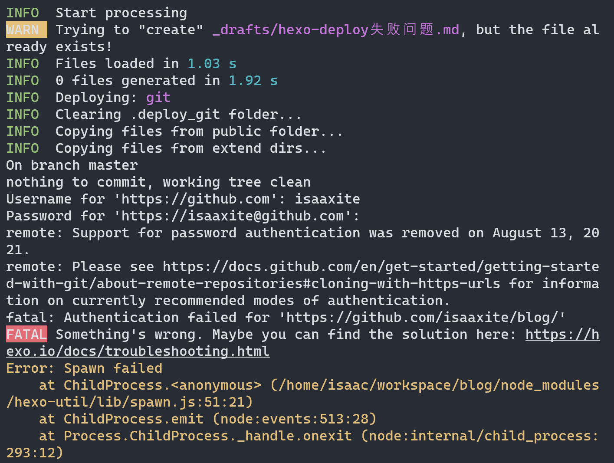
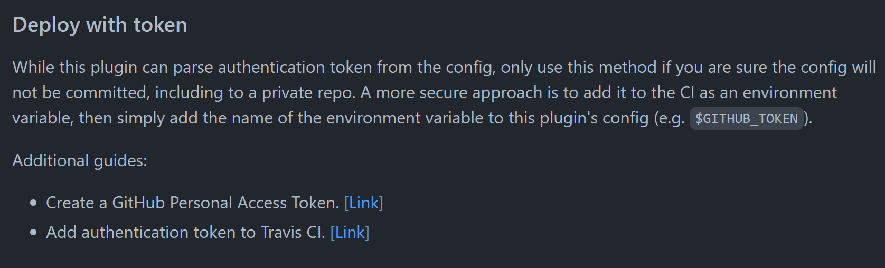
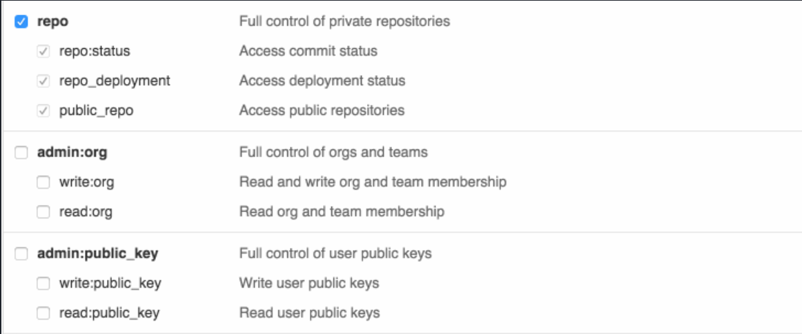
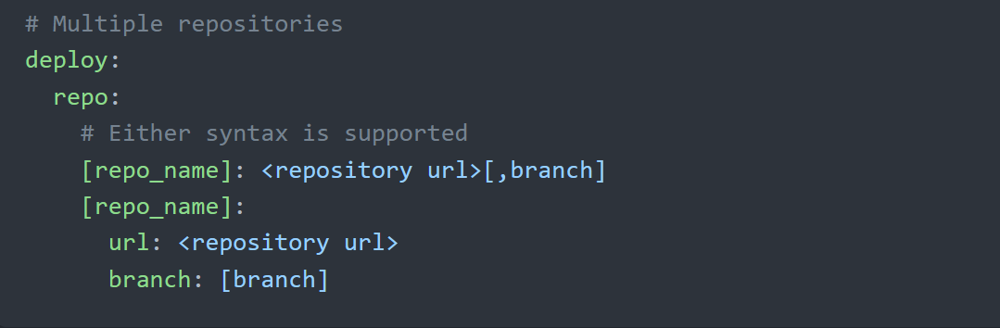
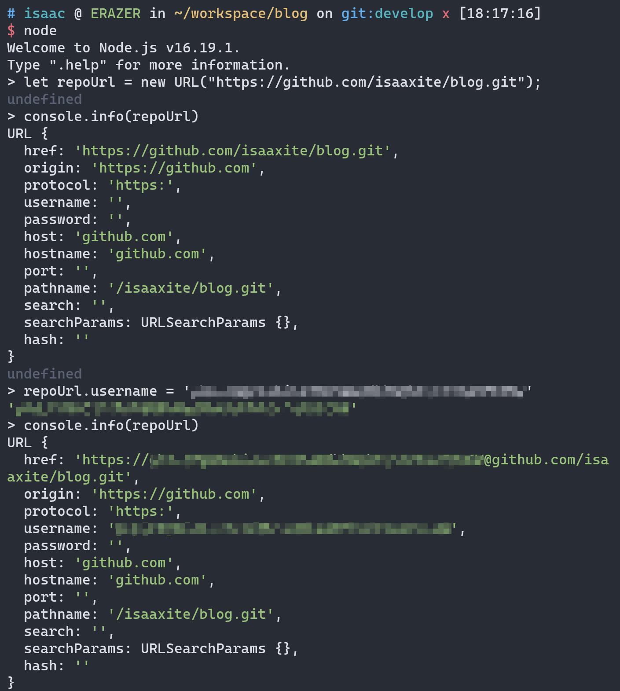
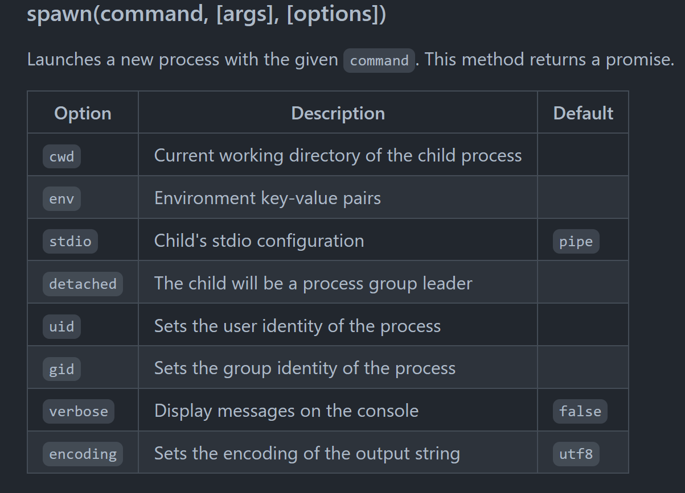

hexo deploy失败问题
前言
当前在WSL的Debian系统中使用hexo写作以及发布部署。
在Win和Mac系统环境下，在deploy的时候，会自动跳转浏览器做OAuth2授权，不影响使用。
但是在WSL环境或者说Linux环境（可能）下，会直接在终端 prompt。要求输入账号和密码，但是无论输入对或错都会失败。本文旨在解决此问题以及deploy的部分逻辑分析。
为什么输入正确还是push失败？
使用 默认的deploy配置 并进行部署，你会得到以下结果：

在以上日志已经提示：
1 | remote: Support for password authentication was removed on August 13, 2021. |
在 2021/08/31 开始，GitHub已经不支持通过账号和密码进行验证！
详细可以查阅：Github Blog: Git password authentication is shutting down
更换验证方式
既然密码验证方式已经不适用。那只能换个验证方式。
首先WSL环境下，是无法进行OAuth2授权的。
hexo部署使用 Github Repository: hexo-deployer-git 库，可以查阅该库支持的验证方式。

README指明，可以使用 Github 的 Access Token 进行验证。
首先，需要在 Gtihub 申请个人Token，可以通过 Github Docs: Creating a personal access token 指引进行申请。
注意，在分配权限时需要选择 repo 全部权限：

接着，需要修改hexo配置，添加：
1 | deploy: |
这里需要注意，虽然README有给出deploy的配置例子，但是不清晰！

比较多人也对此吐槽了，并因此开了个issue！
Issue: Token deploy prompts for username #159
另外，README推荐使用环境变量来配置 token。当然，如果项目是私有的或者对安全性无要求，可以直接将token直接配置在 _config.yml 中。
还有一个小点需要注意：不需要配置 name 和 email！
到此，配置即完成！
hexo-deployer-git是怎么使用Token的
在阅读hexo-deployer-git部分源码后，得知：
- 使用git命令push commit;
- 使用
spaw函数执行git命令；
使用git命令push
经阅读源码 lib/deploy.js 发现，最后是使用下面这句命令将本地commit推送到GitHub对应分支！
1 | git push -u <repo.url> HEAD:<repo.branch> --force |
详细代码可以参考 附录-git push
但这么看，也没有发现是怎么使用token的。
上面有两个未确定的点是 <repo.url> 和 <repo.branch>。接下来查看 repo 是怎么来的！
从另外一个文件（lib/parse_config.js ）中的部分源码中可以发现几句关键逻辑：
repoUrl = new URL(url);；repoUrl.username = userToken;url = repoUrl.href;
而 url 就是上面使用的 <repo.url>！详细代码参考附录-parseObjRepo。
以下是一个直观的小实验，展示token是如何被使用的：
- 创建URL实例 repoUrl；
- 设置 repoUrl.username；
- 观测 repoUrl.href。

使用执行 spaw 执行 git 命令
在 lib/deploy.js 中知道，是使用 Github Repository: hexojs/hexo-util 的 spaw 执行 git 命令。
这个 spaw 推测是使用 child_process，类似常见的 npm lib 有：shelljs、simple-git 等等。

详细就不展开，感兴趣可以参考：
https://github.com/hexojs/hexo-util/blob/master/lib/spawn.ts
附录
git push
以下是核心逻辑，完整代码参考：lib/deploy.js
1 | function git(...args) { |
parseObjRepo
以下是核心逻辑，完整代码参考：lib/parse_config.js
1 | function parseObjRepo(repo) { |